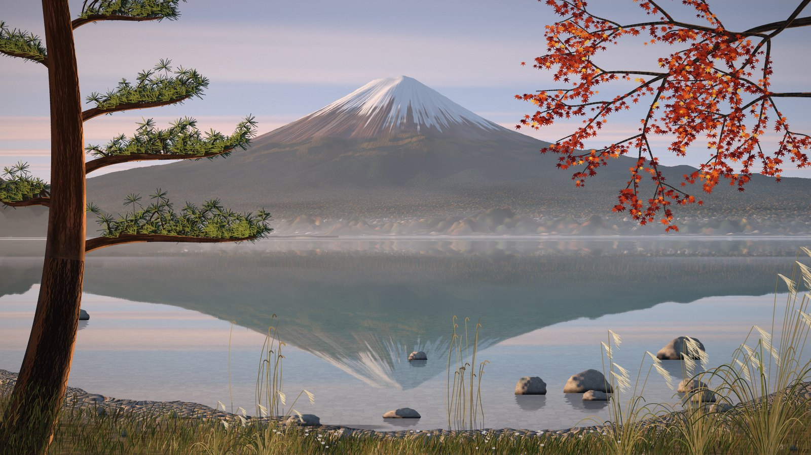
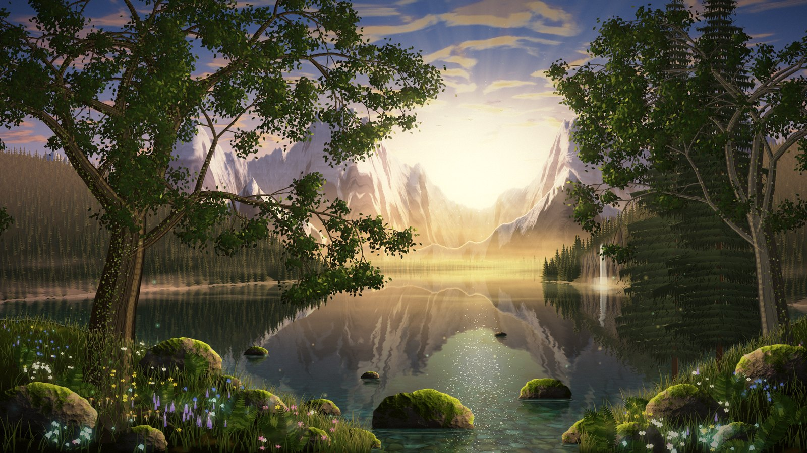
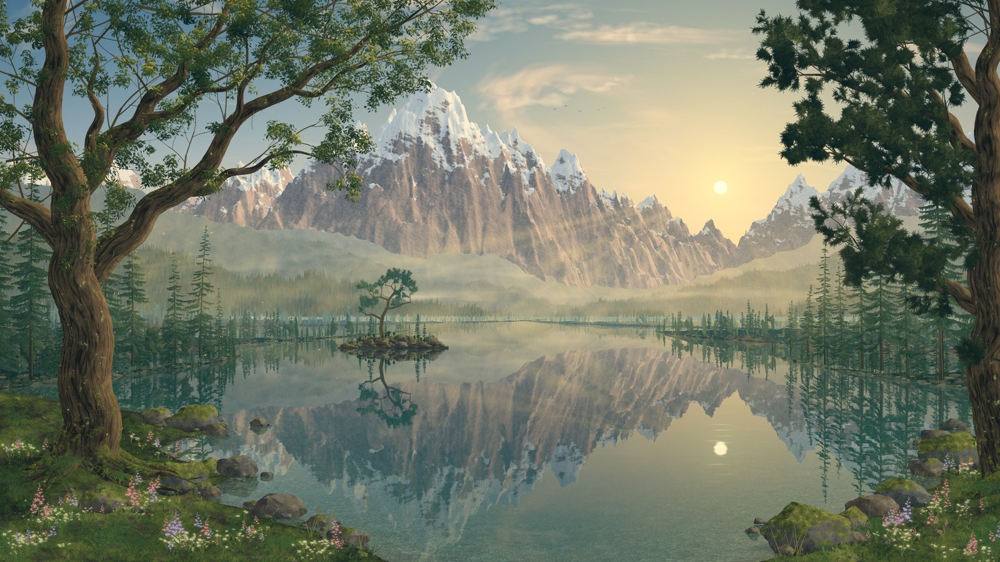
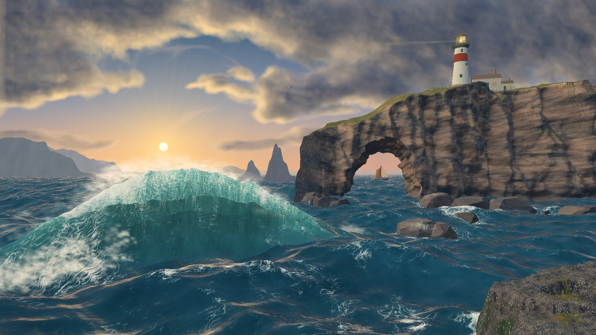
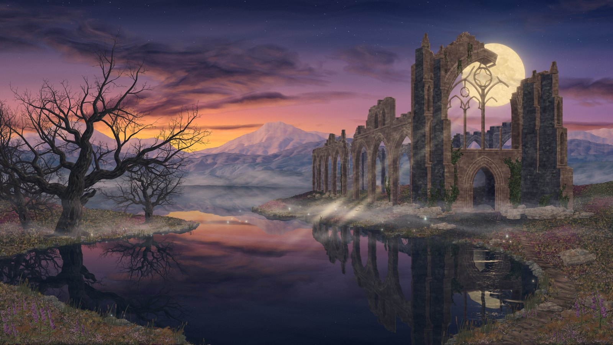
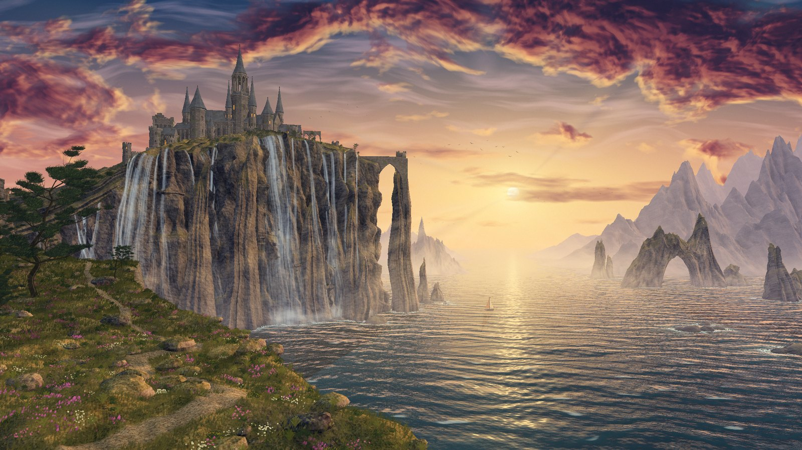
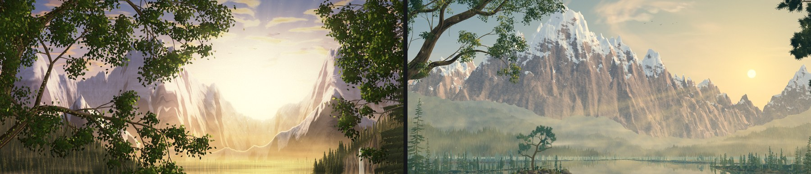

Each picture below is a single HTML file of Canvas and plain JavaScript. It holds no image and loads nothing; open it and your browser computes every pixel in a few seconds. Change ?seed= in the address for another version of the same place (Crystal Tarn takes a whole number; the others take any text).

Made by Claude · in this repository, with the procedural-canvas skill
The mountain is the real one. The file carries elevation data for the ground this camera sees, from the north shore of Lake Kawaguchi 18 km from the summit, and the Sun stands where it was at 07:05 on 10 November 2026. The bank, the trees and the weather are invented, and the page says which is which.
default seed kawaguchi-1107 · ?seed=anything · about 4 s to paint · 188 KB, 134 KB of it elevation

Made by Claude · from the shared prompt
Layers composed in screen space and lit in post: a sunrise sky, ridge-profile mountains, fractal trees with about 54,000 leaves on the oak, light shafts, bloom and a warm grade.
default seed 1847 · ?seed= a whole number (this piece reads only integers) · about 3 s to paint

Made by OpenAI Codex · from the shared prompt
A small world in metres with a pinhole camera: a heightfield with runoff-carved gullies and cast shadows, about 47,000 trees rooted on the terrain, and water in linear light with Fresnel, refraction and absorption.
default seed larkspur-17 · ?seed=anything · about 5 s to paint

Made by OpenAI Codex · from no prompt beyond “make another scene”
A sea arch sphere-traced as a distance field, a light-marched cloud volume, a Gerstner-wave ocean with a plunging breaker, and a rasterised lighthouse, cottages and cutter.
default seed rook-29 · ?seed=anything · about 6 s to paint

Made by OpenAI Codex · from its own detailed prompt
A ruined abbey in two-point perspective with coursed masonry and tracery, a cratered moon whose light is integrated through the broken window, bare oaks, and a loch. Mist, water and will-o’-the-wisps are animated.
default seed vespers-1049 · ?seed=anything · about 9 s to paint, then it moves · ?still=1 holds the first frame · Space pauses · S saves a PNG

Made by OpenAI Codex · from its own detailed prompt
The most engine-like: a triangle mesh drawn by a scanline z-buffer rasteriser, with a mirrored camera for the reflection, a sun shadow map, ambient occlusion and a scattering march through the sea air.
default seed vesper-8731 · ?seed=anything · about 8 s to paint
Crystal Tarn and Larkspur Mere were made from one prompt, word for word. Claude composed a painting in screen space and lit it afterwards; Codex built a small world in metres and rendered it. The mountains show the difference most: a ridge line with shading on the left, a heightfield with gullies and cast shadows on the right.

The same crop of both canvases at full size. Left: Claude. Right: OpenAI Codex.
Create an extraordinary, photorealistic fantasy landscape entirely through procedural code. Scene: An ancient forest surrounding a crystal-clear alpine lake at sunrise. Towering trees with mathematically generated branching structures, thousands of individually rendered leaves, glowing wildflowers, intricate moss-covered rocks, distant mountains, atmospheric mist, and golden sunlight filtering through the canopy. The perfectly still lake reflects the entire landscape with physically inspired reflections and subtle ripples. Technical requirements: - Use only HTML5 Canvas and vanilla JavaScript. - Render at exactly 1920×1080 resolution. - No AI-generated images, SVG imports, external assets, libraries, textures, or image files. - Generate every pixel procedurally using mathematics and code. - Implement fractal branching, layered Perlin/fBm noise, atmospheric scattering, particle systems, volumetric-looking light shafts, procedural terrain, and realistic water reflections. - Use thousands of individually computed details and carefully controlled color gradients. - Include a seeded random generator for reproducible results. - Prioritize visual quality, depth, realistic lighting, and sophisticated composition over code brevity. The final result should resemble a magnificent 19th-century Romantic landscape painting, with cinematic lighting and extraordinary natural detail. Deliver one complete, self-contained HTML file (and/or artifact) containing all HTML, CSS, and JavaScript. It must run locally in a browser without internet access. Do not use image generation tools or external resources.
Four of the six pieces were made by OpenAI Codex models and are kept here exactly as they were generated, with credit; only the file names changed. What both approaches teach is written up as the procedural-canvas skill.